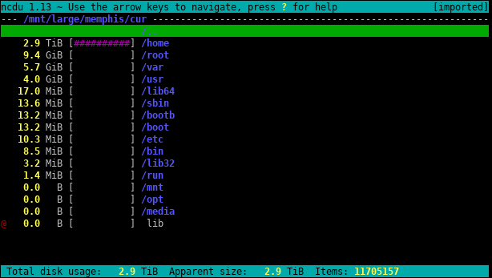

- Fri 19 April 2024
- Misc
- Marius Mather
- #shell, #terminal
You might have used disk space analyzers like WizTree to find what's using up your hard drive space on your computer. If you're running out of room on a server, though, it can be a bit tougher to work out what's chewing up space.
The first step is usually the df command to see how much space is used on
different volumes (the -h flag makes this more readable):
$ df -h
Filesystem Size Used Avail Use% Mounted on
devtmpfs 863M 0 863M 0% /dev
tmpfs 893M 168K 893M 1% /dev/shm
tmpfs 893M 9.5M 883M 2% /run
tmpfs 893M 0 893M 0% /sys/fs/cgroup
/dev/map 17G 6.9G 11G 41% /
For a better idea of the biggest directories and files though, you can use ncdu, which scans your entire filesystem for you and finds the largest ones.
Run sudo ncdu / and you'll get an interactive interface like:

You can navigate into directories to see exactly which subfolders are taking up room.
You can install it in Ubuntu via sudo apt install ncdu, or on MacOS via brew install ncdu.